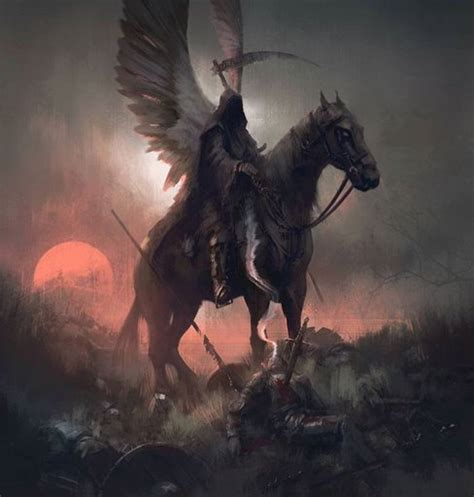
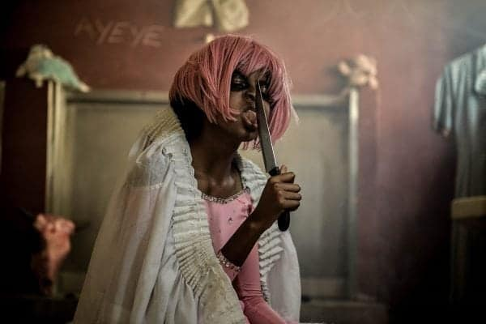

The name may sound amusing but to many people it represents fear, hatred rape and torment. This creature is more than a myth – it’s a belief and it’s always out there – waiting for its chance! Apparently half man – half woman, Pinky Pinky is a creature whose origins may date back centuries to a time when it was known to the Zulus as the “Umdlwenguli Obomvu”. Today she, or perhaps he, is a creature that has migrated to the cities and makes regular appearances in African townships from one end of South Africa to the other. Sightings tend to happen in clusters and Pinky Pinky is usually found hiding in places where young girls are likely to be alone such as school toilets or at the edges of rural woods. At best, this creature is a molester of prepubescent and pubescent girls and, at worst, a savage, murderous, rapist. Pinky Pinky is almost unknown in “white” South African society which is often, but not always, dismissive of such claims. However, for young African girls this creature is much more real and believable. It’s a terrifying figure that features often in nightmares and occasionally in reports of sexual abuse. Both pre and post apartheid authorities have, at times, taken reported sightings of Pinky Pinky very seriously. Headmasters have closed schools to protect their pupils from this so called “myth”. Official police investigations have been carried out to ascertain if “there really might be something to this ‘bloody’ Pinky Pinky business.”
Descriptions vary but those that are consistent describe a pink-skinned, feminine man, of late middle age who dresses in a mixture of both male and female clothes. If a person surprises this creature then they can see its face which is human but ugly, mottled and often bald. If it sees a person looking then its features blur so that all someone can see are two pink-coloured eyes. Its alleged victims say that it tries to corner a girl and then speaks to her in a musical woman’s voice and asks if the girl “will play” or “be friends” with Pinky Pinky”. Other versions claim that Pinky Pinky will tell the girl all about herself and where she came from but the girl can never remember exactly what she was told. Pinky Pinky then demands payment for her story. If the girl cannot pay then she is abused or even raped by the monster. In most cases Pinky Pinky only shows herself to girls that are on their own. It is for this reason that many teenage African women insist on visiting public toilets with other women. Very little has been written about Pinky Pinky although a group of students from AFDA in Johannesburg did start to make a film about the creature in 2005 using a vacant building at the UNISA (University of South Africa) campus in Pietermaritzburg, South Africa. Source: Debashine Thangevelo, Tonight, September 26, 2005, Independent News and Media. Today Pinky Pinky is generally believed to be an “urban legend” that emerged as a result of political unrest and social anxiety. The rape and abuse of women and pubescent girls is still unacceptably high in South Africa and it would be understandable for this fear to focus on a particular “monster” such as Pinky Pinky. To put this in context:
“A study by Interpol, the international police agency, has revealed that South Africa leads the world in rapes. A woman was raped in South Africa every 17 seconds. This did not include the number of child rape victims. It was estimated that (during their lifetime) one in every two women would be raped. Between 28 and 30 percent of adolescents reported that their first sexual encounter was forced.” Source: Rape statistics South Africa – 9 January 2008, www.rape.co.za. However there is an even older and darker element to the creature Pink Pinky. Journals of 19th century settlers and explorers of Africa often record the tales of strange beasts and creatures still unknown to science.
After discussing the Pinky Pinky creature with a number of African South Africans it seems that the legend and belief originated from three sources that have become entwined. The first source of the story lies in albinism – a genetic disorder that manifests itself as a lack of pigment in the skin, hair and eyes. These “pink people” were, and still often are, seen by African culture as abnormal and slightly magical. Sadly, many of these unfortunate people have been subjected to terrible atrocities due to their condition. As recently as December 2008 the British Newspaper, The Sun, ran a story entitled: Welcome to Albino Island” and proceeded to explain that a refuge for African Albinos had been established on Ukerewe Island in Tanzania. The article begins: “With their milky white skin, wispy hair and haunting, pale eyes, they are called “the living ghosts” by locals. And the vulnerable albinos of Tanzania in East Africa have more than insults to fear. They are being hunted down and hacked to death to satisfy a growing demand for their body parts and blood to use in black magic. It is the stuff of nightmares.”